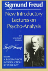
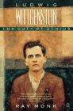

Wittgenstein Reads Freud
Note: The notes below are from a presentation I gave in a seminar at CUNY’s Graduate School and University Center. The subject of the presentation is Chapter 1 of Jacques Bouveresse’s book Wittgenstein Reads Freud.
1 Introduction
I don’t want to bore you to death by merely recounting the contents
of Chapter 1 in  Wittgenstein Reads Freud, so this presentation will also include an
interpretation that, for me, underlies the content of this somewhat
biographical chapter.
Wittgenstein Reads Freud, so this presentation will also include an
interpretation that, for me, underlies the content of this somewhat
biographical chapter.
The three most pressing questions that arise from Ch. 1 are these:
How can Wittgenstein consider himself a follower of Freud and yet criticize him with such force?
How can Wittgenstein criticize the theoretical foundation of Freud’s technique yet still hold that it has significant value?
A more important question lies at the root of the two above: How can Wittgenstein call Freud’s therapeutic method a mythology and acknowledge that his own technique is also a mythology in a similar sense – for neither are based in science – yet that both his and Freud’s views either produce knowledge or clarify the nature of certain problems. In other words, how can Freud’s therapeutic methodology, if it isn’t backed by science, produce knowledge?
2 Ambivalence
As Bouveresse notes, one problem with interpreting Wittgenstein’s remarks on Freud is that they appear in brief, allusive passages that are, with the exception of Conversations on Freud , scattered throughout his writings and notes of his lectures.
Yet one pattern does emerge: Freud’s name is often mentioned in broad philosophical discussions on language, on mythology, and on the distinctions between reasons and causes and between aesthetic explanation and causal explanation.
In Chapter 1, Bouveresse begins to make some sense of these scattered remarks, especially the ambivalence inherent in Wittgenstein’s criticisms of Freud at the same time that Wittgenstein claims to be a disciple of him. How, Bouveresse seeks to explain, could Wittgenstein have considered psychoanalysis both important and mistaken.
Perhaps an answer to this questions lies in a remark by Wittgenstein that is pivotal to my own interpretation. In Culture and Value, Wittgenstein writes: > “In a way, having oneself psychoanalyzed is like eating from the tree > of knowledge. Knowledge acquired sets us (new) ethical problems; but > contributes nothing to their solution.”
On the basis of this remark as well as others by Wittgenstein, I will argue that Wittgenstein held psychoanalysis to be a method that could clarify but not resolve not only ethical but also psychological problems. In other words, for Wittgenstein one of the myths of psychoanalysis is that even though the insights gained through it can be beneficial in themselves, the insights do not entail a solution to or resolution of the problem. In this way, Wittgenstein is dispelling a myth of psychoanalysis.
3 Solving vs. Dissolving Problems
That Wittgenstein believed psychoanalysis cannot resolve problems forms part of his basis for calling himself a follower of Freud while criticizing Freud and viewing his theory as wrong. There are, of course, problems with this interpretation: As will become apparent, it produces some ambivalence of its own.
One problem pertains to the distinction between saying a problem is solved and saying that it has somehow evaporated because, for instance, it has been pulled out by its linguistic roots, so to speak.
 Such a view must also
be reconciled with a passage from Philosophical Investigations in which
Wittgenstein says, somewhat uncharacteristically, that certain problems
of language are indeed “solved.” And this remark clashes, to a certain
extent, with another remark in the Brown Book where
Wittgenstein says the application of his technique aims to yield a
clarity so complete that the philosophical problem at hand completely
disappears. But if the problem disappears, has it been resolved?
Such a view must also
be reconciled with a passage from Philosophical Investigations in which
Wittgenstein says, somewhat uncharacteristically, that certain problems
of language are indeed “solved.” And this remark clashes, to a certain
extent, with another remark in the Brown Book where
Wittgenstein says the application of his technique aims to yield a
clarity so complete that the philosophical problem at hand completely
disappears. But if the problem disappears, has it been resolved?
Anyway: I’m not going to worry about this too much just now. Perhaps some of you will have some comments on it later. Instead, I wanted to point out some of Wittgenstein’s criticisms of Freud, as well as some of the reasons Wittgenstein may have saw himself as a disciple of Freud.
But first, it may be worth noting that a fundamental difference between Wittgenstein and Freud pertains to Wittgenstein’s view of madness. As Bouveresse points out, Wittgenstein wondered if the concept of illness was really appropriate, writing that
“Madness need not be regarded as an illness. Why shouldn’t it be seen as a sudden–more or less sudden–change of character.”
4 Criticisms of Freud from a “Disciple”
First, Wittgenstein sees Freud’s theory as speculation, not science. On Page 44 of Conversations on Freud, Wittgenstein writes: “Freud is constantly claiming to be scientific. But what he gives is speculation–something prior even to the formation of a hypothesis.”

Second, Wittgenstein, Bouveresse points out, often alluded to the distinction between the unconscious and conscious as one that would constitute an additional source of confusion: Wittgenstein’s skepticism about the unconscious clashes with his philosophical method, which holds that there is nothing “hidden” to bring to the surface but that everything is in principle immediately accessible at the surface (cf structuralism). In this way, Wittgenstein’s conception of the nature of psychic phenomena, Bouveresse says, does not mark Wittgenstein as a disciple of Freud (or as a structuralist, for that matter).So just what does mark Wittgenstein as a disciple of Freud, especially given that Wittgenstein thinks that the postulation of the unconscious – one of Freud’s foremost theoretical moves – is not only philosophically misguided but also without scientific basis.
The reasons for Wittgenstein’s self-characterization as a disciple of Freud must be sought elsewhere – in the application of a technique.
5 It’s All in the Technique
The technique that Wittgenstein used in his later years was among other things to clarify the nature of philosophical problems by examining the language in which they were presented. The language game, used to get at the root of a problem, sought to analyze the use or function of language in a particular context.
Bouveresse says that despite Wittgenstein’s misgivings about such a comparison, the reduction of philosophy to a form of psychoanalysis seems justified. Bouveresse gives additional reasons why the comparison is justified:
“Wittgenstein explicitly compares philosophy with a kind of self-analysis that must triumph over certain specific resistances.”
Wittgenstein said, for example, that “Working philosophy … is really more working on oneself. On one’s own interpretation. On one’s way of seeing things.”
In another instance, Wittgenstein said that “philosophy is an instrument that is useful only against philosophers and against the philosopher in us.”
In this way, then,
Wittgenstein can be seen as a follower of Freud – metaphorically he
believed that his work of clarification required the analysis of the
philosophical self, so to speak.
Bouveresse points out there are still other ways, by analogy, in which Wittgenstein’s technique can be seen as making him a follower of Freud:
Wittgenstein on occasion advocates a return to the primitive states of philosophical problems, to a level at which they are uncluttered by the ravages of time and prior analysis.
And, like the therapeutic practice of the psychoanalyst, the practice of Wittgenstein’s philosophical technique aims to identify and eliminate the causes of trouble.
But this raises yet another Question: If Wittgenstein’s technique is not based upon theory at all, and Freud’s technique is based upon a ill-begotten theory, how can we know that their techniques have identified the right problems or eliminated the correct causes of trouble? Must we just take it as a matter of faith or intuition that they have?
6 Theoretical Issues
Yet Wittgenstein came to harshly criticize aspects of many of the theoretical notions upon which Freud’s technique was founded:
Freud was convinced that there had to be one correct explanation of psychological behavior and that he had found it. Wittgenstein held that there was not and could not be a single explanation for such varied behavior. Wittgenstein believed that Freud’s theory, like Darwin’s, did not contain sufficient explanatory power to account for the vast range of phenomena.
In this way, Wittgenstein’s attitude was one of “unproductive skepticism” compared with Freud’s creative dogmatism, Bouveresse says.
Wittgenstein did not formulate a philosophical theory so much as a technique for clarifying its problems. Indeed, for Wittgenstein, the need to formulate a theory is itself a misguided intention. A theory based on the notion that there must be one correct explanation would be, for Wittgenstein, a myth. He was more interested in how he could see connections.
And a technique, based upon such a theory, is the application of a mythology. But for Wittgenstein, that doesn’t mean the technique is without value.
7 A Powerful Mythology
And here is the crucial difference for Wittgenstein. Although he believed Freud’s theory to be unscientific and misguided, he believed that the mythology it produced could be used to clarify psychological problems just as his philosophical technique, which was also in no way based upon a science, could shed a clarifying light on age-old philosophical problems. through the application of psychoanalysis, as well as Wittgenstein’s language game technique, “bumps” are uncovered that make one see the value of discovery.
But it is knowledge of the self, for the self – like religious or aesthetic knowledge - that lies outside the category of the scientific.
In connection to this view, Bouveresse writes [p. 19]: “There is no science that accounts for the illusions to which philosophy falls victim, and no scientifically established technique that can free philosophic understanding from the obsessive and false analogies which are at the source of the insoluble problems it confronts.”

Thus, a technique, a “way of seeing” or “way of speaking” – even a mythological one – may provide a powerful means by which to clarify philosophical or psychological problems.But note that the application of such techniques produces a clarification, not a resolution. The insights produced when the self is seen through the lens of a myth can be immensely enlightening. Clarification, however, does not entail resolution. It just alters the way the problem is seen. the problem remains, as Bouveresse puts it, insoluble.
Thus, to conclude, as Ray Monk puts it in his biography of Wittgenstein, “Freud’s explanations are akin to the elucidation offered by Wittgenstein’s own work. They provide, not a causal, mechanical theory, but, paraphrasing Wittgenstein, a way to give up one way of thinking and adopt another.
This makes a start at answering the three questions I posed at the beginning of this talk. Perhaps the first two have been answered sufficiently. But what about the third question? Any thoughts?
8 Related Pages
- Wittgenstein Contra Freud: The Myth of Psychoanalysis
- Points of Contact and Criticism Between Wittgenstein and Freud
- A Wittgensteinian Approach to Discourse Analysis
- Interpretation and Indeterminacy in Discourse Analysis
- Indoctrination and Resistance in psychotherapeutic Dialogue
- Construction of The Double As Social Object